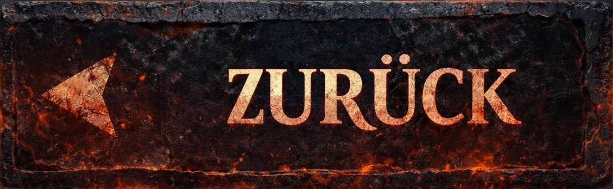
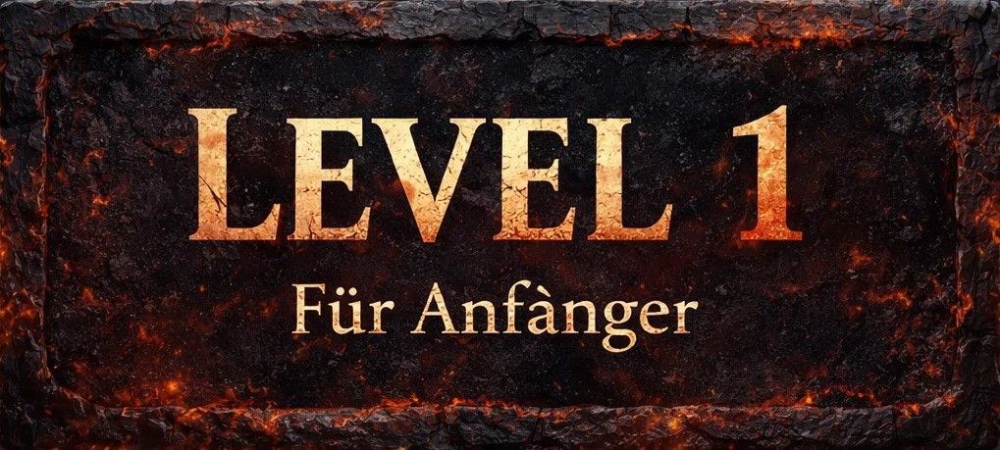
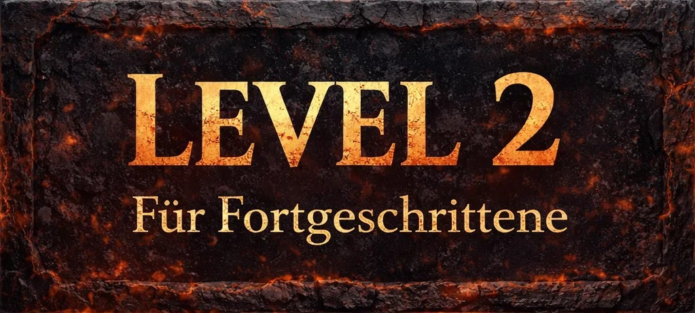
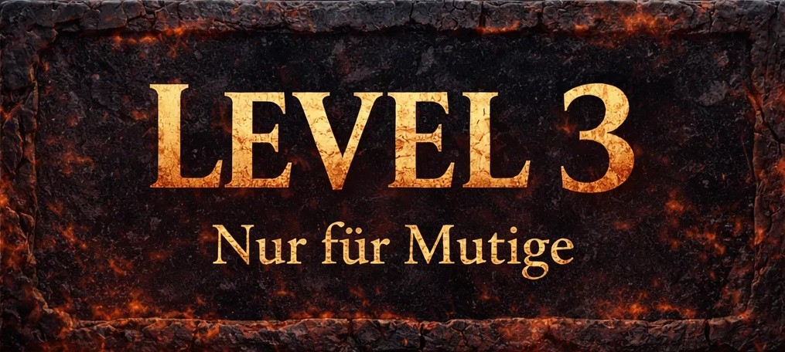
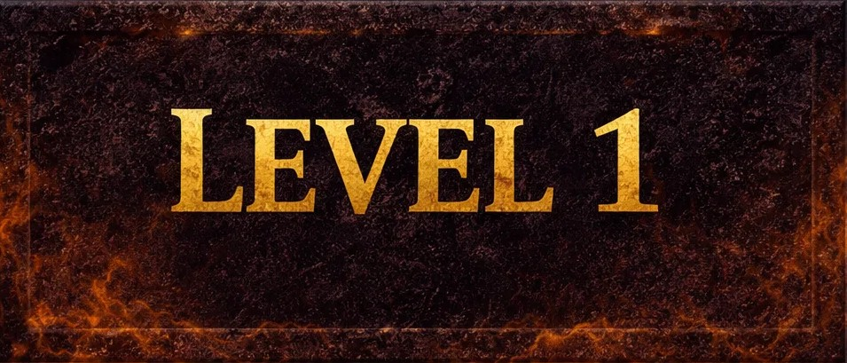
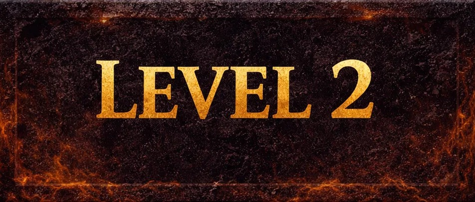
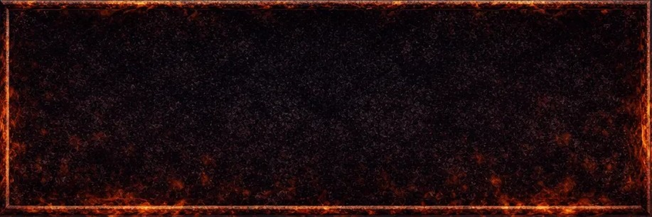
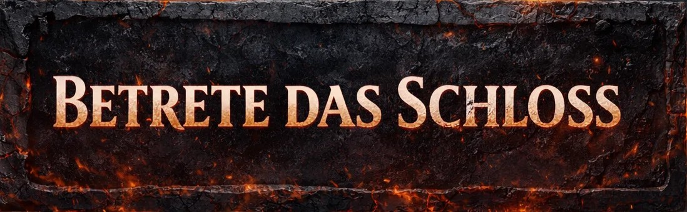

In Schloss der Finsternis erwachst du allein in einem kalten, verlassenen Gemäuer, dessen Wände zu flüstern scheinen und dessen Schatten sich bewegen, wenn du nicht hinsiehst. Jeder Raum birgt ein Geheimnis – und vielleicht etwas, das dich beobachtet. Mit jedem Klick öffnest du knarrende Türen, sammelst seltsame Artefakte und setzt Hinweise zusammen, doch die Dunkelheit arbeitet gegen dich. Stimmen aus der Ferne, rätselhafte Gestalten und verstörende Begegnungen mit den Bewohnern des Schlosses lassen dich an deinem Verstand zweifeln. Und irgendwo in den endlosen Gängen lauert der Graf… geduldig, lauernd, immer näher kommend. Ein falscher Schritt, ein Moment zu lange gezögert – und du spürst seinen Atem im Nacken, bevor dich die Finsternis verschlingt und dich zurückwirft. Nur wer stark genug ist, den Schrecken zu widerstehen und das dunkle Geheimnis zu lüften, hat eine Chance, diesem Albtraum zu entkommen.
Du erwachst in einem kalten, schwach beleuchteten Raum, ohne zu wissen, wie du hierhergekommen bist. Die Luft ist schwer, und aus den dunklen Ecken scheinen dich unsichtbare Augen zu beobachten. Dieses erste Level dient dazu, dich mit den Mechaniken des Schlosses vertraut zu machen – doch unterschätze es nicht. Einfache Rätsel, versteckte Hinweise und erste Begegnungen mit seltsamen Gestalten fordern deinen Verstand heraus. Die Schritte des Grafen sind hier noch fern, doch manchmal glaubst du, ein leises Flüstern oder ein entferntes Knarren hinter dir zu hören. Mit mehreren Hinweisen und häufigen Checkpoints hast du noch eine gewisse Sicherheit – aber das Gefühl, nicht allein zu sein, begleitet dich von Anfang an.

Nachdem du das erste Zimmer überstanden hast, führen dich die Gänge tiefer in das Schloss. Die Schatten werden länger, die Türen knarren unheilvoll, und die Geräusche verstärken das Gefühl, dass dich jemand beobachtet. Rätsel werden komplexer und erfordern kombinatorisches Denken und Aufmerksamkeit für Details. Die NPCs, denen du begegnest, geben Hinweise, doch nicht alle sind vertrauenswürdig – manche versuchen, dich in die Irre zu führen. Der Graf ist jetzt unberechenbarer: Er taucht plötzlich auf, wenn du Fehler machst oder zu lange zögerst. Checkpoints und Hinweise sind seltener, sodass jeder Schritt wohlüberlegt sein muss, um nicht ins Dunkel zurückgeworfen zu werden.
Du bist tief im Schloss angekommen, in Bereichen, die von Dunkelheit und Bedrohung durchdrungen sind. Die Rätsel sind knifflig und erfordern volle Konzentration und Mut, während die Atmosphäre dich in den Wahnsinn zu treiben scheint. Der Graf ist ständig präsent, seine Schritte hallen durch die Gänge, und jede falsche Entscheidung kann dich zurückwerfen. NPCs sind kaum noch zu finden, Hinweise extrem rar. Hier entscheidet sich, ob du das Geheimnis des Schlosses wirklich lüften und entkommen kannst. Jeder Schatten, jedes Geräusch kann dein letzter Fehler sein – nur wer Ruhe bewahrt, logisch denkt und den Mut nicht verliert, überlebt den Herzschlag der Finsternis.